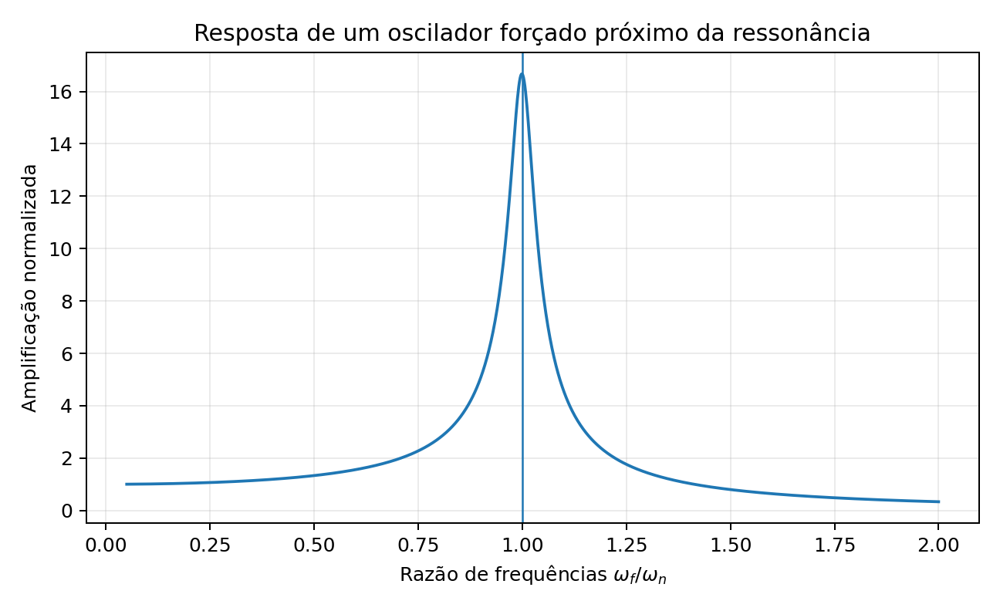
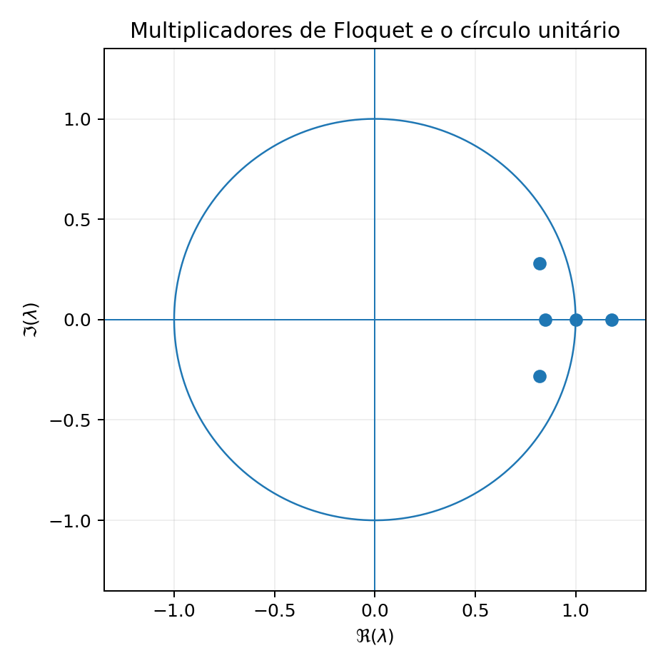

Sumário
- A geometria comum da rotação
- Coriolis como identidade cinemática
- Rotação como escala de tempo e rigidez
- Momento angular e precessão
- Fase rápida, evolução lenta e média
- Ressonância e dinâmica periódica
- Uma hierarquia de analogias
- Conclusão
A geometria comum da rotação
Uma pá de helicóptero e um satélite em órbita vivem sob mecanismos físicos diferentes, mas ambos podem ser descritos em referenciais que giram. Essa escolha de coordenadas introduz uma gramática comum: termos de Coriolis, contribuições proporcionais ao quadrado da velocidade angular, uma fase rápida associada à revolução e variáveis lentas que acumulam efeitos ao longo de muitos ciclos.
Uma pá de helicóptero e um satélite em órbita pertencem, à primeira vista, a universos mecânicos distintos. A pá é um corpo elástico esbelto, ligado mecanicamente a um cubo rotativo, banhado por um escoamento aerodinâmico altamente compressível e não-estacionário, dissipando energia por arrasto e amortecimento estrutural sob rotação imposta por turbinas. O satélite é uma massa pontual livre que se desloca no vácuo de um campo gravitacional conservativo, sem vínculos mecânicos com o corpo primário.
Apesar dessa disparidade física e construtiva, as equações diferenciais que regem ambos os sistemas compartilham uma arquitetura comum. Essa semelhança não é coincidência formal nem analogia superficial de apostila. Ela decorre de uma restrição geométrica compartilhada: ambos os problemas são formulados em referenciais não inerciais dotados de rotação própria, onde uma velocidade angular de fundo organiza as escalas temporais do movimento, gera acoplamentos inerciais proporcionais à primeira e à segunda potência dessa rotação e impõe periodicidade estrita às equações de perturbação.
Para extrair valor preditivo dessa comparação sem incorrer em falsas equivalências, este estudo divide as correspondências entre dinâmica de rotores e mecânica orbital em três níveis rigorosos.
O primeiro nível é a identidade cinemática. A aceleração de Coriolis que atua sobre uma pá de rotor descrita no referencial do cubo é exatamente o mesmo operador cinemático que governa um satélite no referencial orbital local. Em ambos os casos, a aceleração nasce da diferenciação de vetores sob rotação da base e expressa a conservação da quantidade de movimento angular projetada no plano de rotação.
O segundo nível é a equivalência estrutural. A frequência natural de batimento de pá articulada sem mola coincide com a rotação do rotor (\(\omega_\beta = \Omega\)), assim como a oscilação normal ao plano de uma órbita circular coincide com o movimento médio orbital (\(\omega_z = n\)). Os mecanismos restauradores diferem, tração centrífuga em um caso e gradiente gravitacional no outro, mas a dinâmica adimensional resultante é a de um oscilador sintonizado em exatamente uma oscilação por revolução (\(1/\text{rev}\)). Ambos os movimentos são a projeção de planos inclinados vistos de referenciais girantes.
O terceiro nível é a analogia metodológica. A transformação de coordenadas de múltiplas pás de Coleman e Feingold [4], a teoria de perturbações por elementos osculadores de Lagrange e Gauss, a média assintótica sobre o ciclo rápido e a teoria de Floquet formam uma mesma linhagem analítica concebida para separar a fase rápida periódica da evolução lenta secular.
Distinguir esses três níveis permite compreender onde as equações coincidem por necessidade geométrica estrita e onde divergem em virtude da física específica de cada meio.
A semelhança é mais útil quando distinguimos três níveis. Algumas relações são identidades cinemáticas e independem da origem das forças. Outras são equivalências estruturais entre equações que possuem a mesma forma, embora seus coeficientes representem mecanismos diferentes. Há ainda analogias metodológicas, nas quais a mesma técnica matemática, como média assintótica ou teoria de Floquet, organiza problemas periódicos de naturezas distintas.
Hierarquia das analogias
Identidade cinemática: nasce da escolha de um referencial rotativo. Coriolis pertence a este nível.
Equivalência estrutural: duas dinâmicas possuem a mesma arquitetura matemática, mas os termos têm origens físicas diferentes.
Analogia metodológica: o mesmo método de análise resolve classes de sistemas periódicos sem exigir equivalência entre seus mecanismos.
A classificação permite usar a ponte entre rotores e órbitas sem transformar semelhança matemática em identidade física.
Coriolis como identidade cinemática
Considere um vetor posição arbitrário \(\mathbf{r}\) que localiza uma partícula no espaço. A posição independe do observador, mas sua taxa de variação temporal depende diretamente da rotação da base de projeção. Se uma base rotativa \(R\) gira com velocidade angular instantânea \(\boldsymbol\Omega\) em relação a um referencial inercial \(I\), a relação cinemática para a derivada temporal de qualquer vetor \(\mathbf{A}\) é expressa por
\[ \left(\frac{d\mathbf A}{dt}\right)_I = \left(\frac{d\mathbf A}{dt}\right)_R + \boldsymbol\Omega\times\mathbf A. \]
O termo de produto vetorial representa a velocidade tangencial com que os vetores da base móvel giram no espaço inercial. Aplicando esse operador sucessivamente à posição \(\mathbf{r}\) e à velocidade observada \(\mathbf{v}_R = (d\mathbf{r}/dt)_R\), obtém-se a aceleração inercial completa:
\[ \mathbf a_I = \mathbf a_R + 2\boldsymbol\Omega\times\mathbf v_R + \dot{\boldsymbol\Omega}\times\mathbf r + \boldsymbol\Omega\times(\boldsymbol\Omega\times\mathbf r). \]
Quando a equação de movimento de Newton é transposta para o observador no referencial girante com velocidade angular constante (\(\dot{\boldsymbol\Omega} = \mathbf{0}\)), a dinâmica relativa passa a ser governada pelas forças reais acrescidas de duas acelerações aparentes:
\[ m\mathbf a_R = \mathbf F_{\rm real} - 2m\boldsymbol\Omega\times\mathbf v_R - m\boldsymbol\Omega\times(\boldsymbol\Omega\times\mathbf r). \]
O termo \(-m\boldsymbol\Omega\times(\boldsymbol\Omega\times\mathbf r)\) é a força centrífuga aparente, que aponta radialmente para fora do eixo de rotação com magnitude \(\Omega^2 r_\perp\).
O termo \(-2m\boldsymbol\Omega\times\mathbf v_R\) é a força de Coriolis. O fator 2 resulta da soma exata de dois termos cinemáticos de mesma magnitude (\(1+1=2\)):
- Variação da orientação da velocidade relativa: o vetor \(\mathbf{v}_R\), mesmo que constante em módulo e direção dentro do referencial móvel, gira no espaço inercial à taxa \(\boldsymbol\Omega\), gerando uma componente inercial de aceleração \(\boldsymbol\Omega \times \mathbf{v}_R\).
- Gradiente da velocidade de transporte: conforme a partícula se desloca com velocidade relativa \(\mathbf{v}_R\), ela penetra continuamente em posições espaciais cujo vetor de arrasto \(\boldsymbol\Omega \times \mathbf{r}\) possui magnitude ou direção distinta. A taxa temporal com que a velocidade de transporte varia ao longo da trajetória relativa introduz a segunda componente idêntica \(\boldsymbol\Omega \times \mathbf{v}_R\).
Esse acoplamento nasce da cinemática da base e independe do mecanismo que produz sua rotação. Sempre que houver movimento relativo descrito em um referencial girante, o termo de Coriolis aparece com direção dada pelo produto vetorial entre rotação e velocidade relativa.
A manifestação direta de Coriolis em uma pá articulada de rotor reside no acoplamento entre o batimento fora do plano e o movimento de avanço e atraso no plano do disco. Como detalhado por Harris [3], quando uma pá de comprimento \(R\) desenvolve um ângulo de batimento \(\beta(t)\) em relação ao plano do cubo, cada um de seus elementos de massa \(dm\) localizados à distância radial \(r\) sofre uma variação na sua distância perpendicular ao eixo de rotação:
\[ \rho = r\cos\beta. \]
A quantidade de movimento angular infinitesimal do elemento em torno do eixo do rotor é dada por \(dH_z = dm\,\rho^2 \dot\psi\), onde \(\psi(t)\) é a posição azimutal da pá. Em um rotor articulado no qual a articulação de atraso não transmita torque restaurador instantâneo apreciável ao redor do eixo \(z\), a conservação de \(dH_z\) impõe
\[ \frac{d}{dt}\left(\rho^2 \dot\psi\right) = 0 \quad\implies\quad 2\rho\dot\rho\dot\psi + \rho^2\ddot\psi = 0. \]
Diferenciando \(\rho = r\cos\beta\), obtém-se a velocidade radial aparente \(\dot\rho = -r\sin\beta\,\dot\beta\). Substituindo essa taxa na conservação de quantidade de movimento angular:
\[ \ddot\psi = 2\tan\beta\,\dot\beta\dot\psi. \]
Para pequenas deflexões de batimento (\(\cos\beta \approx 1\) e \(\sin\beta \approx \beta\)), a aceleração azimutal relativa assume a forma
\[ \ddot\psi \approx 2\beta\dot\beta\Omega. \]
O insight físico deste resultado é transparente: quando a pá sobe (\(\beta > 0\) e \(\dot\beta > 0\)), sua projeção radial \(\rho\) encolhe. Para conservar a quantidade de movimento angular em relação ao eixo de rotação, a velocidade angular da pá precisa crescer em relação ao cubo, produzindo avanço angular relativo. No referencial girante do rotor, essa mesma dinâmica é calculada diretamente pela força aparente de Coriolis. Uma velocidade radial para dentro (\(\dot\rho < 0\)) sob rotação \(\boldsymbol\Omega = \Omega\,\hat{\mathbf{k}}\) produz a aceleração tangencial
\[ \mathbf a_{\rm Cor} = -2\boldsymbol\Omega\times\dot{\boldsymbol\rho} = -2(\Omega\hat{\mathbf{k}})\times(\dot\rho\hat{\mathbf{e}}_r) = -2\Omega\dot\rho\,\hat{\mathbf{e}}_\psi. \]
Como \(\dot\rho < 0\), a aceleração resultante aponta no sentido positivo de \(\psi\), acelerando a pá no azimute. Conservação de quantidade de movimento angular no espaço inercial e força de Coriolis no referencial girante são descrições matematicamente equivalentes do mesmo fenômeno físico.
Considere agora o movimento relativo de dois satélites em órbitas circulares próximas sob campo gravitacional central \(\mu\), formulado nas equações de Clohessy-Wiltshire (ou coordenadas de Hill) por Clohessy e Wiltshire [1] e revisado por Battin [2]. O referencial possui origem em um satélite de referência em raio \(r_0\), girando com o movimento médio orbital \(n = \sqrt{\mu/r_0^3}\). O eixo \(x\) aponta na direção radial para fora, \(y\) ao longo do vetor velocidade tangencial na trajetória e \(z\) normal ao plano orbital. As equações linearizadas de Clohessy-Wiltshire assumem a forma
\[ \ddot x - 2n\dot y - 3n^2x = 0, \]
\[ \ddot y + 2n\dot x = 0, \]
\[ \ddot z + n^2 z = 0. \]
Isole a dinâmica ao longo da trajetória expressa na segunda equação:
\[ \ddot y = -2n\dot x. \]
Se o satélite perseguidor é perturbado radialmente para cima (\(\dot x > 0\)), surge instantaneamente uma desaceleração tangencial relativa (\(\ddot y < 0\)). A origem cinemática do termo de Coriolis é a mesma que aparece no rotor, embora o restante da dinâmica orbital seja governado pelo campo gravitacional. No campo gravitacional central, a quantidade de movimento angular específica da órbita é \(h = r v_\theta\). Um satélite deslocado para uma altitude maior adquire uma órbita com velocidade tangencial inercial menor:
\[ v_\theta = \frac{h}{r_0 + x} \approx v_0\left(1 - \frac{x}{r_0}\right). \]
Contudo, a origem do referencial de Clohessy-Wiltshire gira com velocidade angular rígida \(n\). A velocidade inercial de um ponto fixo no sistema rotativo em \(r_0 + x\) é \(n(r_0 + x) \approx v_0 + nx\). Portanto, ao subir radialmente, o satélite não apenas perde velocidade orbital inercial em virtude da conservação de \(h\), como o referencial girante se desloca mais rapidamente naquele raio. A defasagem acumulada força o satélite a derivar para trás no eixo tangencial.
Nos dois sistemas, a estrutura do acoplamento é formalmente invariante:
\[ \text{movimento radial relativo } (\dot\rho \text{ ou } \dot x) \quad\xrightarrow{\quad 2\Omega\text{ ou }2n\quad}\quad \text{aceleração tangencial relativa } (\ddot\psi \text{ ou } \ddot y). \]
A única distinção reside na ordem de magnitude. Em um helicóptero típico com \(\Omega = 30\text{ rad/s}\) e velocidade radial projetada de batimento \(\dot\rho \approx 0{,}5\text{ m/s}\), a aceleração de Coriolis atinge \(2\Omega|\dot\rho| \approx 30\text{ m/s}^2\), ordem de três vezes a aceleração da gravidade terrestre, exigindo amortecedores de avanço e atraso elastoméricos ou hidráulicos nas pás para mitigar fadiga severa. Em uma órbita terrestre baixa (\(r_0 \approx 6778\text{ km}\), \(n \approx 1{,}13\times 10^{-3}\text{ rad/s}\)), uma velocidade radial relativa de \(0{,}1\text{ m/s}\) gera uma aceleração de apenas \(2{,}3\times 10^{-4}\text{ m/s}^2\). A escala física muda em cinco ordens de grandeza, mas a estrutura da lei permanece exata porque ambas derivam da cinemática de transporte em coordenadas rotativas.
A força de Coriolis não precisa ser “importada” de uma área para outra. Ela aparece sempre que descrevemos aceleração em uma base que gira e há movimento relativo dentro dessa base. Na pá, o movimento de batimento e avanço-recuo ocorre em um sistema associado ao rotor. No movimento orbital relativo, a posição do veículo é descrita em uma base que acompanha a órbita de referência. A expressão vetorial é a mesma porque a cinemática da base é a mesma, ainda que as forças que governam cada sistema sejam diferentes.
Essa é a ponte mais forte do ensaio. Ela não depende de metáfora. Depende apenas da transformação entre derivadas em referenciais inercial e rotativo.
Rotação como escala de tempo e rigidez
Além de introduzir acoplamentos giroscópicos proporcionais a \(\Omega\), a velocidade angular de rotação dita as frequências naturais das oscilações fora do plano em ambos os sistemas.
Considere a oscilação normal ao plano orbital na terceira equação de Clohessy-Wiltshire:
\[ \ddot z + n^2 z = 0. \]
A frequência natural dessa oscilação vertical é identicamente igual ao movimento médio da órbita:
\[ \omega_z = n. \]
A coincidência de escala entre a oscilação normal ao plano e o movimento médio orbital decorre da geometria linearizada do problema de dois corpos, sem exigir uma mola material. Uma órbita circular ligeiramente inclinada por um ângulo \(i \ll 1\) em relação ao equador de referência é um círculo máximo sobre a esfera celeste. O satélite cruza o plano de referência no nó ascendente (\(z = 0\)), atinge a altura máxima \(z_{\max} \approx r_0 i\) a um quarto de período, cruza o nó descendente na metade da revolução e alcança o ponto mais baixo no terceiro quarto de órbita, completando exatamente um ciclo senoidal por revolução orbital:
\[ z(t) = r_0 i \sin(nt). \]
A equação \(\ddot z + n^2 z = 0\) nada mais é do que a projeção cartesiana linearizada de uma trajetória plana inclinada que intersecta o plano coordenado do observador uma vez por órbita.
No rotor articulado ideal, a equação de batimento produz outra coincidência de escala: a frequência natural de batimento é igual à rotação no modelo de pá sem mola e sem offset. Considere uma pá rígida ideal de momento de inércia \(I_\beta\), articulada exatamente sobre o eixo de rotação (\(e = 0\)), livre de molas mecânicas e no vácuo. Ao bater para fora do disco por um ângulo \(\beta\), cada elemento de massa \(dm\) a uma distância \(r\) do centro experimenta uma força centrípeta inercial dada por
\[ dF_{\rm cf} = dm\,\Omega^2(r\cos\beta). \]
Essa força atua perpendicularmente ao eixo do mastro. Seu braço de alavanca em relação à articulação de batimento no centro do cubo é a altura vertical \(r\sin\beta\). Portanto, a força centrípeta gera um momento restaurador que tenta trazer a pá de volta ao plano horizontal:
\[ M_{\rm cf} = -\int_0^R (r\sin\beta)\,dF_{\rm cf} = -\Omega^2\sin\beta\cos\beta\int_0^R r^2\,dm = -I_\beta\Omega^2\sin\beta\cos\beta. \]
Aplicando a segunda lei de Newton para a rotação da pá em torno da articulação de batimento, \(I_\beta \ddot\beta = M_{\rm cf}\):
\[ I_\beta\ddot\beta + I_\beta\Omega^2\sin\beta\cos\beta = 0. \]
Para pequenas amplitudes (\(\sin\beta \approx \beta\) e \(\cos\beta \approx 1\)), a equação linearizada de batimento no vácuo reduz-se a
\[ \ddot\beta + \Omega^2\beta = 0. \]
A frequência natural de batimento da pá articulada central é
\[ \omega_\beta = \Omega. \]
Adimensionalizando a frequência natural pela rotação de operação, obtém-se a frequência advectiva normalizada
\[ \nu_\beta = \frac{\omega_\beta}{\Omega} = 1. \]
A correspondência entre os dois domínios é completa:
\[ \frac{\omega_z}{n} = 1, \qquad \frac{\omega_\beta}{\Omega} = 1. \]
Uma construção cinemática útil considera uma pá sem articulação excêntrica girando no vácuo com inclinação fixa em relação ao mastro. No espaço inercial, sua trajetória permanece contida em um plano inclinado (o plano de ponta de pá, ou tip-path plane). Para o observador inercial, cada elemento da pá permanece girando em uma trajetória plana estável. É o observador fixado no mastro rotativo que vê a pá subir e descer harmonicamente uma vez por revolução azimutal. Tanto na órbita quanto no rotor, a frequência \(1/\text{rev}\) não é uma resposta elástica criada por molas, mas a assinatura cinemática de uma trajetória plana inclinada vista a partir de um sistema de coordenadas que gira em seu próprio plano de referência.
Os termos quadráticos na velocidade de rotação (\(\Omega^2\) e \(n^2\)) entram nas equações dinâmicas como matrizes de rigidez aparente. A origem física dessa rigidez distingue a elasticidade mecânica da pá da dinâmica orbital.
Na pá do helicóptero, cada seção transversal precisa sustentar a aceleração centrípeta de todos os elementos materiais localizados mais externamente ao longo do raio. Se \(m'(s)\) é a massa linear da pá, a tensão de tração axial interna na seção radial \(r\) é dada por
\[ N(r) = \int_r^R m'(s)\Omega^2 s\,ds. \]
Essa tração interna \(N(r) \propto \Omega^2\) atinge dezenas de kilonewtons nas raízes das pás de helicópteros médios. Quando a pá sofre deflexões transversais de flexão ou batimento \(w(r,t)\), a tração longitudinal atua restaurando o alinhamento da viga, de forma idêntica à tensão mecânica que confere rigidez transversal a uma corda esticada. Na equação diferencial de vigas de Euler-Bernoulli, essa contribuição surge no termo de rigidez geométrica:
\[ \rho A \ddot w + \frac{\partial^2}{\partial r^2}\left(EI\frac{\partial^2 w}{\partial r^2}\right) - \frac{\partial}{\partial r}\left(N(r)\frac{\partial w}{\partial r}\right) = F_{\rm aero}. \]
O operador \(-\frac{\partial}{\partial r}\left(N(r)\frac{\partial w}{\partial r}\right)\) é o enrijecimento centrífugo. Ele é estritamente restaurador, puramente positivo e decorre da tração de um material contínuo sob rotação. Sem esse enrijecimento centrípeto real, pás de helicóptero estruturalmente flexíveis colapsariam sob as cargas aerodinâmicas de sustentação.
Na dinâmica orbital, o termo radial \(-3n^2 x\) de Clohessy-Wiltshire possui origem física radicalmente diferente. O movimento radial de uma partícula em uma órbita central é governado pelo potencial efetivo \(V_{\rm eff}(r)\), que combina o potencial gravitacional atrativo com o potencial centrífugo repulsivo no referencial girante:
\[ V_{\rm eff}(r) = -\frac{\mu}{r} - \frac{1}{2}n^2 r^2. \]
A órbita circular nominal de raio \(r_0\) localiza-se exatamente no ponto de equilíbrio radial, onde o gradiente de força se anula:
\[ \left.\frac{dV_{\rm eff}}{dr}\right|_{r_0} = \frac{\mu}{r_0^2} - n^2 r_0 = 0. \]
Avaliando a curvatura desse potencial no ponto de equilíbrio:
\[ \left.\frac{d^2 V_{\rm eff}}{dr^2}\right|_{r_0} = -\frac{2\mu}{r_0^3} - n^2. \]
Como \(n^2 = \mu/r_0^3\), a derivada segunda assume o valor exato
\[ \left.\frac{d^2 V_{\rm eff}}{dr^2}\right|_{r_0} = -2n^2 - n^2 = -3n^2 < 0. \]
No referencial rotativo, o ponto associado à órbita circular possui a geometria local de um ponto de sela, com direções de resposta distintas a pequenas perturbações. Se o satélite for deslocado para fora (\(x > 0\)), a atração gravitacional decresce (\(+2n^2 x\)), enquanto a aceleração centrípeta repulsiva aumenta (\(+n^2 x\)). As duas forças somam-se para repelir a partícula para longe da órbita circular com taxa líquida \(+3n^2 x\).
A órbita relativa no plano não diverge exponencialmente para o infinito apenas porque o acoplamento giroscópico de Coriolis (\(2n\dot y\)) estabiliza o sistema. A solução geral das equações de Clohessy-Wiltshire para uma órbita relativa fechada periódica produz elipses retrogradas com razão de semi-eixos estrita de \(2:1\) entre a direção tangencial e a radial.
Ambos os sistemas cabem na representação linearizada de segunda ordem
\[ \mathbf M\ddot{\mathbf q} + \mathbf G(\Omega)\dot{\mathbf q} + \mathbf K(\Omega)\mathbf q = \mathbf f, \]
com matriz antissimétrica giroscópica \(\mathbf G \propto \Omega\) e matriz de rigidez efetiva \(\mathbf K \propto \Omega^2\). Todavia, o insight físico estabelece a fronteira: no rotor, \(\mathbf K\) é governada pela tração molecular elástica interna de uma estrutura contínua sob rotação mecânica forçada. Na órbita, \(\mathbf K\) é o gradiente gravitacional e centrífugo no vácuo, cuja instabilidade radial natural exige a ação giroscópica de Coriolis para produzir trajetórias relativas fechadas.
A rotação também estabelece uma escala natural de tempo. Em muitos rotores, a frequência de batimento livre é da ordem de uma vez por revolução porque a tração centrífuga cresce com Ω² e atua como rigidez geométrica. Em movimento orbital relativo, o movimento médio n entra nas equações de Clohessy-Wiltshire como escala dinâmica e produz termos restauradores ou acoplamentos ligados à curvatura do campo gravitacional.
A forma quadrática em Ω ou n convida à analogia, mas o mecanismo precisa permanecer explícito. No rotor, a rigidez centrífuga nasce de tensão interna na pá e de sua geometria deformada. Na órbita, os termos equivalentes resultam do gradiente do campo gravitacional e da descrição relativa em torno de uma trajetória de referência. A semelhança está na estrutura das equações e na escala de rotação, não em uma “mola” física comum.
Momento angular e precessão
A quantidade de movimento angular oferece uma ponte real entre os dois domínios, mas não produz a mesma dinâmica em ambos. Em um referencial inercial, com o momento tomado em relação ao ponto apropriado,
\[ \boldsymbol\tau = \dot{\mathbf H}, \]
de modo que torques externos alteram a magnitude ou a direção de \(\mathbf H\). Em uma órbita kepleriana ideal em torno de um corpo esférico, o torque gravitacional sobre o movimento orbital é nulo e o plano permanece fixo no espaço inercial. Perturbações como \(J_2\), terceiros corpos ou empuxo contínuo introduzem variações lentas que podem aparecer como precessões seculares.
No rotor, momento angular também participa do balanço global, mas a resposta ao comando cíclico exige a dinâmica das pás. Um rotor articulado próximo de \(\nu_\beta=1\) responde à excitação de uma vez por revolução com fase próxima da quadratura. Rigidez de raiz, hinge offset, amortecimento aerodinâmico e acoplamentos estruturais deslocam frequência e fase. Ensaios de rotores hingeless mostram precisamente que a resposta em frequência depende desses parâmetros, razão pela qual modelos de controle usam transfer functions identificadas ou derivadas para a arquitetura específica.
A comparação com um giroscópio conserva uma intuição geométrica sobre sistemas rotativos e momento angular. A equação de batimento acrescenta aquilo que essa intuição não contém: distribuição de carga aerodinâmica, elasticidade e amortecimento. Em dinâmica orbital, por sua vez, a precessão secular é obtida a partir das perturbações que alteram o vetor orbital de momento angular. A mesma lei de balanço aparece nos dois problemas, enquanto os mecanismos que determinam os torques e as escalas de resposta permanecem distintos.
Momento angular como ponte limitada
A relação \(\boldsymbol\tau=\dot{\mathbf H}\) vale nos dois domínios. Ela organiza a mudança de orientação, mas não substitui a equação aeroelástica da pá nem a dinâmica perturbada da órbita.
Fase rápida, evolução lenta e média
Tanto a dinâmica de rotores quanto a mecânica celeste enfrentam um desafio central de modelagem: o estado instantâneo contém uma oscilação rápida de alta frequência associada à revolução do sistema, enquanto as grandezas determinantes para controle, guiamento e estabilidade variam em uma escala de tempo muito mais lenta.
Na astrodinâmica de perturbações orbitais formulada por Lagrange e Gauss e sistematizada no padrão da NASA por Folta et al. [8], a posição e a velocidade de um satélite em órbita elíptica variam a cada segundo com velocidades da ordem de quilômetros por segundo. Contudo, a órbita instantânea pode ser descrita pelos elementos osculadores de Kepler: o semieixo maior \(a\) (energia específica), a excentricidade \(e\) (forma geométrica), a inclinação \(i\), a longitude do nó ascendente \(\Omega\) e o argumento do periastro \(\omega\) (orientação espacial da elipse).
Sob pequenas perturbações gravitacionais ou atmosféricas de magnitude adimensional \(\varepsilon \ll 1\), a fase orbital rápida (a anomalia verdadeira \(\nu\) ou média \(M\)) avança com taxa \(\dot M \sim n\), enquanto os cinco elementos geométricos derivam lentamente:
\[ \frac{d\mathbf a_{\rm osc}}{dt} \sim \varepsilon n. \]
Ao congelar o movimento orbital rápido em uma elipse de referência instantânea, o analista foca na evolução secular e de longo período da trajetória.
Na engenharia de rotores de helicópteros, o problema equivalente é a coexistência de \(N_b\) pás que giram a centenas de rotações por minuto, cada uma exibindo coordenadas individuais de batimento \(\beta_i(\psi_i)\) e avanço e atraso \(\zeta_i(\psi_i)\) governadas por coeficientes periódicos dependentes do azimute local \(\psi_i = \Omega t + 2\pi(i-1)/N_b\).
A solução matricial introduzida seminalmente por Coleman e Feingold [4] é a transformação de múltiplas pás (Multiblade Coordinate Transformation, ou transformação de Coleman). Ela projeta as variáveis locais de cada uma das \(N_b\) pás em um conjunto de coordenadas de disco quase-estacionárias medidas no referencial da fuselagem:
\[ \beta_0 = \frac{1}{N_b}\sum_{i=1}^{N_b}\beta_i, \]
\[ \beta_{1c} = \frac{2}{N_b}\sum_{i=1}^{N_b}\beta_i\cos\psi_i, \]
\[ \beta_{1s} = \frac{2}{N_b}\sum_{i=1}^{N_b}\beta_i\sin\psi_i. \]
O significado físico de cada modo coletivo no referencial fixo da aeronave é direto. A conicidade média do rotor \(\beta_0(t)\) corresponde à sustentação vertical líquida ou empuxo coletivo gerado sobre o mastro. A inclinação longitudinal do disco \(\beta_{1c}(t)\) inclina o vetor sustentação para frente ou para trás, gerando o momento de arfagem da aeronave. A inclinação lateral do disco \(\beta_{1s}(t)\) inclina a resultante aerodinâmica para a esquerda ou para a direita, governando o momento de rolamento.
A transformação de Coleman elimina a oscilação rápida \(1/\text{rev}\) das pás individuais em voo pairado simétrico, transformando equações diferenciais com coeficientes periódicos em equações lineares com coeficientes constantes expressas nas variáveis de disco \(\beta_0, \beta_{1c}, \beta_{1s}\).
A analogia metodológica entre os dois ramos da engenharia aeroespacial fecha-se de maneira precisa:
\[ \text{fase orbital rápida } (M \text{ ou } \nu) \quad\longleftrightarrow\quad \text{azimute local rápido } (\psi = \Omega t), \]
\[ \text{elementos orbitais osculadores } (a, e, i, \Omega, \omega) \quad\longleftrightarrow\quad \text{coordenadas multiblade de Coleman } (\beta_0, \beta_{1c}, \beta_{1s}). \]
Em ambos os casos, a escolha correta do sistema de coordenadas remove da representação a redundância cinemática do ciclo e isola a física da evolução temporal relevante para a dinâmica do veículo.
Uma vez separadas as coordenadas rápidas e lentas, o método assintótico da média (averaging method) permite determinar se os termos periódicos produzem um acúmulo secular de energia ou se cancelam ao longo de um ciclo fechado.
Seja uma variável dinâmica lenta \(X\) governada por uma perturbação de intensidade \(\varepsilon \ll 1\) acoplada a uma fase periódica \(\theta\):
\[ \frac{dX}{dt} = \varepsilon f(X,\theta), \qquad \dot\theta = \omega. \]
Integrando o sistema ao longo de um período completo \(T = 2\pi/\omega\) sob a aproximação de que \(X\) varia de forma negligenciável durante uma única revolução, a deriva líquida por ciclo é expressa pela média do campo vetorial:
\[ \langle f\rangle = \frac{1}{2\pi}\int_0^{2\pi} f(X,\theta)\,d\theta, \qquad \left(\frac{dX}{dt}\right)_{\rm secular} \approx \varepsilon\langle f\rangle. \]
Em dinâmica de rotores com velocidade angular constante regulada por governador de rotação (\(\dot\psi = \Omega\)), a relação diferencial entre tempo e ângulo azimutal é estritamente linear:
\[ dt = \frac{d\psi}{\Omega}. \]
Com \(\Omega\) constante, a média temporal de uma grandeza periódica pode ser convertida em média uniforme no azimute. Um termo puro em \(\cos\psi\) ou \(\sin\psi\) possui componente média nula, embora continue contribuindo para cargas vibratórias e harmônicas transmitidas ao hub. Produtos não lineares, como \(\cos^2\psi=\frac12(1+\cos2\psi)\), geram componentes médias diferentes de zero. A média separa, portanto, a parcela secular ou estacionária das componentes que permanecem cíclicas.
Na mecânica celeste de órbitas perturbadas, entretanto, surge uma assimetria matemática imposta pela segunda lei de Kepler. A conservação da quantidade de movimento angular específica em uma órbita elíptica de excentricidade \(e > 0\) estabelece
\[ h = r^2\dot\nu = \text{constante}, \]
onde \(\nu\) é a anomalia verdadeira e \(r(\nu) = p / (1 + e\cos\nu)\). A relação diferencial entre o tempo e a posição angular é expressa por
\[ dt = \frac{r^2(\nu)}{h}\,d\nu = \frac{p^2}{h(1 + e\cos\nu)^2}\,d\nu. \]
A média temporal física de uma função perturbadora orbital \(g(\nu)\) ao longo do período orbital \(T\) não pode ser calculada por uma simples integração uniforme em \(\nu\):
\[ \langle g\rangle_t = \frac{1}{T}\int_0^T g\,dt = \frac{1}{T}\int_0^{2\pi} g(\nu)\,\frac{r^2(\nu)}{h}\,d\nu \neq \frac{1}{2\pi}\int_0^{2\pi} g(\nu)\,d\nu. \]
O insight físico que diferencia os dois procedimentos advém da distribuição temporal da trajetória. Em uma órbita excêntrica, o satélite viaja com velocidade máxima pelo periastro e desacelera progressivamente até o apoastro, onde passa a maior fração do período orbital. Uma integração uniforme na anomalia verdadeira \(\nu\) superestima os efeitos da perturbação no periastro e subestima a longa permanência no apoastro. Para recuperar a média temporal homogênea na órbita, é necessário transformar a variável de integração para a anomalia média \(M = n(t - t_0)\), para a qual \(dM = n\,dt\), ou ponderar a quadratura pelo peso geométrico de Kepler \((r/a)^2\).
O método da média une conceitualmente os dois domínios ao filtrar oscilações de alta frequência, mas exige respeito à cinemática do relógio de cada sistema: uniforme e mecânico no rotor, e elíptico e gravitacional na órbita.
A separação entre fase rápida e evolução lenta é uma equivalência metodológica particularmente produtiva. O azimute ψ percorre 2π a cada volta do rotor. A anomalia orbital cumpre papel semelhante ao parametrizar a posição do satélite ao longo de uma revolução. Em ambos os casos, muitas quantidades de interesse variam pouco durante um único ciclo e acumulam mudanças ao longo de dezenas ou milhares de revoluções.
O método da média explora exatamente essa separação. Termos periódicos que alternam sinal podem se cancelar ao longo do ciclo, enquanto uma pequena componente média produz deriva secular. O engenheiro de rotores usa essa ideia ao converter cargas azimutais em componentes harmônicas ou estados médios. O astrodinamicista a usa ao separar elementos osculantes de tendências seculares. A ferramenta é comum porque a estrutura multiescala é comum.
Ressonância e dinâmica periódica
Ressonância é um problema de fase e ganho dinâmico. Considere o oscilador amortecido
\[ \ddot q+2\zeta\omega_n\dot q+\omega_n^2q = \frac{F_0}{m}\cos\omega_f t. \]
No regime harmônico estacionário,
\[ q(t)=Q\cos(\omega_f t-\phi), \]
com amplitude
\[ Q= \frac{F_0/m} {\sqrt{(\omega_n^2-\omega_f^2)^2+ (2\zeta\omega_n\omega_f)^2}}. \]
A potência média fornecida pela força é
\[ \overline P = \frac12 F_0\omega_fQ\sin\phi. \]
Essa expressão oferece a leitura física mais útil. Perto da região ressonante, a resposta pode crescer muito porque força e velocidade permanecem em uma relação de fase que transfere potência eficientemente ao oscilador. Em regime estacionário, essa potência não cresce indefinidamente: ela é dissipada pelo amortecimento. A frequência de pico também não coincide exatamente com \(\omega_n\) quando o amortecimento é finito.

Figura 1. A vizinhança da ressonância combina ganho elevado e mudança rápida de fase. O amortecimento limita a amplitude estacionária.
Harmônicos do rotor
A rotação fornece ao rotor uma escala periódica natural. Assimetria de escoamento, interação de esteira, não uniformidade de inflow, passagens de pá e outras fontes podem produzir conteúdo harmônico em ordens relacionadas a \(\Omega\):
\[ \omega_{\rm exc}=k\Omega, \qquad k=1,2,3,\ldots \]
O diagrama de Campbell coloca frequências modais e ordens de excitação no mesmo plano. Um cruzamento não significa automaticamente falha: ele identifica uma região em que separação de frequência, amortecimento, nível de excitação e tempo de permanência precisam ser avaliados. Em projeto, algumas interseções são afastadas da faixa operacional. Outras são atravessadas com margem de amortecimento e cargas demonstradas por análise ou ensaio.
Essa leitura é mais física que a regra “evite toda coincidência”. O risco depende de quanto trabalho o carregamento consegue realizar sobre o modo e de quanta energia o sistema consegue dissipar a cada ciclo.
Ângulos ressonantes em órbita
Em mecânica celeste, uma ressonância de movimento médio é organizada por uma combinação angular lenta. Para uma família simples,
\[ \phi = p\lambda_2-q\lambda_1-(p-q)\varpi, \]
e sua taxa contém a combinação
\[ \dot\phi\approx pn_2-qn_1+\cdots. \]
Longe da comensurabilidade, \(\phi\) circula pelo intervalo \(0\) a \(2\pi\) e perturbações aplicadas em diferentes fases tendem a se distribuir ao longo da órbita. Próximo da ressonância, \(\phi\) pode evoluir lentamente ou librar em torno de um valor. As conjunções passam então a ocorrer em geometrias correlacionadas por muitas revoluções.
O efeito acumulado não possui um único sinal. Uma ressonância pode aumentar excentricidade e favorecer regiões instáveis, como ocorre em parte da estrutura das lacunas de Kirkwood, ou pode organizar uma configuração protegida, como a ressonância 3:2 entre Plutão e Netuno. A grandeza transferida também não precisa crescer monotonicamente: em sistemas hamiltonianos, energia e momento angular podem oscilar entre graus de liberdade enquanto o ângulo ressonante permanece confinado.
A ponte com o rotor está na coerência de fase. Em ambos os casos, uma relação temporal persistente impede que todas as contribuições periódicas se distribuam uniformemente pelo ciclo. O resultado específico depende da dinâmica que realiza essa coerência.
Coerência sem identidade física
Ressonância em um rotor e ressonância orbital compartilham uma estrutura de fase. O primeiro envolve estrutura, aerodinâmica, excitação e dissipação. O segundo pode ser essencialmente conservativo. A analogia transfere o raciocínio sobre fase, não um mesmo mecanismo de energia.
Floquet e o operador de uma revolução
Outra equivalência aparece quando a própria dinâmica linearizada é periódica. Em voo à frente, por exemplo, coeficientes aerodinâmicos de uma pá variam com o azimute. A perturbação pode assumir a forma
\[ \dot{\mathbf x}=\mathbf A(t)\mathbf x, \qquad \mathbf A(t+T)=\mathbf A(t). \]
Em vez de interpretar os autovalores instantâneos de \(\mathbf A(t)\) como se o sistema fosse estacionário, a teoria de Floquet observa a evolução ao longo de um período inteiro. A matriz de transição fornece
\[ \mathbf x(t_0+T) = \boldsymbol\Phi(t_0+T,t_0)\mathbf x(t_0), \]
e a matriz de monodromia
\[ \mathbf M=\boldsymbol\Phi(t_0+T,t_0) \]
resume a transformação produzida por um ciclo. Seus autovalores,
\[ \mathbf M\mathbf v_i=\lambda_i\mathbf v_i, \]
são os multiplicadores de Floquet. Depois de \(k\) períodos, uma perturbação alinhada com um autovetor evolui como \(\lambda_i^k\).
Em um sistema dissipativo periodicamente forçado, multiplicadores com módulo menor que um representam perturbações que decaem de ciclo para ciclo. Um multiplicador atravessando o círculo unitário sinaliza perda de estabilidade linear. Essa linguagem aparece naturalmente em problemas de dinâmica de rotor e instabilidades aeromecânicas [4], [6], [7].

Figura 2. Em sistemas dissipativos, o círculo unitário separa crescimento e decaimento por período. Sistemas hamiltonianos acrescentam restrições espectrais próprias.
A mesma construção vale para a vizinhança de uma órbita periódica no problema restrito de três corpos [8], [9]. Há, contudo, uma diferença estrutural importante. A dinâmica hamiltoniana produz uma matriz de monodromia simplética, e os multiplicadores aparecem em pares recíprocos, com simetrias adicionais no caso real. Uma órbita conservativa não apresenta o mesmo decaimento assintótico de todos os modos que um sistema dissipativo pode apresentar. Multiplicadores neutros também surgem associados às simetrias da dinâmica.
Os expoentes de Floquet podem ser definidos por
\[ \lambda_i=e^{s_iT}. \]
Como o logaritmo complexo possui ramos,
\[ s_i = \frac{1}{T}\ln|\lambda_i| + j\frac{\arg\lambda_i+2\pi k}{T}, \qquad k\in\mathbb Z. \]
Esses valores representam a mesma evolução estroboscópica e diferem por múltiplos inteiros da frequência fundamental. A ambiguidade é uma propriedade da representação dos expoentes. Ela não deve ser interpretada automaticamente como um conjunto de novas frequências físicas observáveis.
O operador de um ciclo
Média e Floquet fazem perguntas complementares. A média procura o que sobrevive quando a fase rápida é eliminada. Floquet preserva a periodicidade e pergunta como uma pequena perturbação é transformada depois de uma revolução completa. Essa diferença explica por que as duas ferramentas reaparecem tanto em rotores quanto em órbitas.
Uma hierarquia de analogias
A comparação entre rotores e órbitas fica mais precisa quando cada ponte é classificada pelo que realmente preserva. Coriolis ocupa o nível mais forte: sua forma decorre da cinemática de um referencial rotativo e independe da origem das forças que atuam no sistema. A mesma transformação de derivadas produz o termo em uma pá ou em movimento orbital relativo.
Os termos proporcionais ao quadrado da velocidade angular exigem mais cautela. No rotor, o enrijecimento centrífugo resulta da tração interna em uma estrutura material girante. Nas equações de movimento orbital relativo, termos em \(n^2\) refletem o gradiente gravitacional e a geometria do referencial que acompanha a órbita. As equações podem apresentar blocos de rigidez com aparência semelhante, mas seus coeficientes respondem a parâmetros físicos diferentes.
A média sobre o ciclo e a teoria de Floquet pertencem a um terceiro nível. Elas são ferramentas para sistemas com uma fase periódica, independentemente de essa periodicidade nascer de uma pá atravessando azimutes sucessivos ou de um veículo percorrendo uma órbita. Nesse caso, a analogia transfere um método de análise: separar escalas, integrar um ciclo e estudar o operador de evolução periódico.
As diferenças energéticas delimitam o restante. Um rotor recebe potência continuamente e dissipa energia por aerodinâmica e estrutura. Uma órbita kepleriana ideal pode ser tratada como sistema conservativo. A pá é uma estrutura contínua com flexão e torção. O satélite do modelo orbital relativo costuma ser reduzido a um corpo rígido ou ponto material. A velocidade angular do rotor é regulada pelo sistema de propulsão, enquanto o movimento médio orbital decorre da trajetória e do parâmetro gravitacional.
Regra de transferência
Uma identidade cinemática pode ser reutilizada diretamente. Uma equivalência estrutural exige reinterpretar os coeficientes. Uma analogia metodológica transfere a ferramenta matemática, mantendo separados os mecanismos físicos.
Essa regra transforma a analogia em instrumento de raciocínio. Ela permite reconhecer estruturas matemáticas comuns sem esperar que cada variável de Coleman encontre um “equivalente orbital”, ou que cada elemento osculador possua um correspondente mecânico no rotor. A ponte é útil exatamente porque preserva somente o que precisa ser preservado.
Conclusão
A matemática comum entre rotores e órbitas nasce menos de uma identidade entre máquinas do que de estruturas que reaparecem quando observamos sistemas em rotação. Referenciais móveis geram Coriolis. A velocidade angular estabelece escalas de tempo e introduz termos quadráticos. A revolução cria uma fase rápida, enquanto perturbações pequenas acumulam efeitos lentos. Quando os coeficientes permanecem periódicos, média e Floquet oferecem uma linguagem natural para separar o que cancela do que cresce.
Declarar o nível da analogia permite transferir identidades, estruturas ou métodos na medida adequada, reinterpretando os coeficientes sempre que a origem física muda.
Rotores e órbitas iluminam-se mutuamente quando separamos a geometria geral da rotação dos mecanismos materiais, gravitacionais e aerodinâmicos que realizam cada equação.
Referências
[1] Clohessy, W. H., e Wiltshire, R. S., Terminal Guidance System for Satellite Rendezvous, Journal of the Aerospace Sciences, Vol. 27, No. 9, 1960, pp. 653–658. Link
[2] Battin, R. H., The Clohessy-Wiltshire Equations of Relative Motion, MIT OpenCourseWare, 16.346 Astrodynamics, Fall 2008, acesso em 3 set. 2026. Link
[3] Harris, F. D., Introduction to Autogyros, Helicopters, and Other V/STOL Aircraft, Volume I: Overview and Autogyros, NASA/SP-2011-215959, NASA Ames Research Center, 2011. Link
[4] Coleman, R. P., e Feingold, A. M., Theory of Self-Excited Mechanical Oscillations of Helicopter Rotors with Hinged Blades, NACA Report 1351, 1958. Link
[5] Biggers, J. C., Some Approximations to the Flapping Stability of Helicopter Rotors, Specialists Meeting on Rotorcraft Dynamics, NASA Ames Research Center, Moffett Field, CA, 1974. Link
[6] Hammond, C. E., An Application of Floquet Theory to Prediction of Mechanical Instability, Rotorcraft Dynamics, NASA Ames Research Center, 1974. Link
[7] McNulty, M. J., Effects of Blade-to-Blade Dissimilarities on Rotor-Body Lead-Lag Dynamics, NASA TM-86828, USAAVSCOM Technical Report 86-A-3, 1986. Link
[8] Folta, D., Bosanac, N., Elliott, I., et al., Astrodynamics Convention and Modeling Reference for Lunar, Cislunar, and Libration Point Orbits, NASA/TP-20220014814, 2022. Link
[9] Elliott, I., e Bosanac, N., Describing Relative Motion Near Periodic Orbits via Local Toroidal Coordinates, Celestial Mechanics and Dynamical Astronomy, Vol. 134, Art. 19, 2022. Link